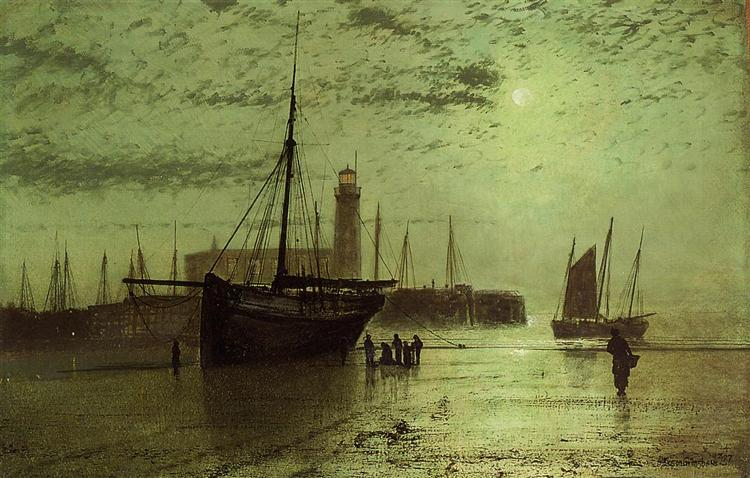
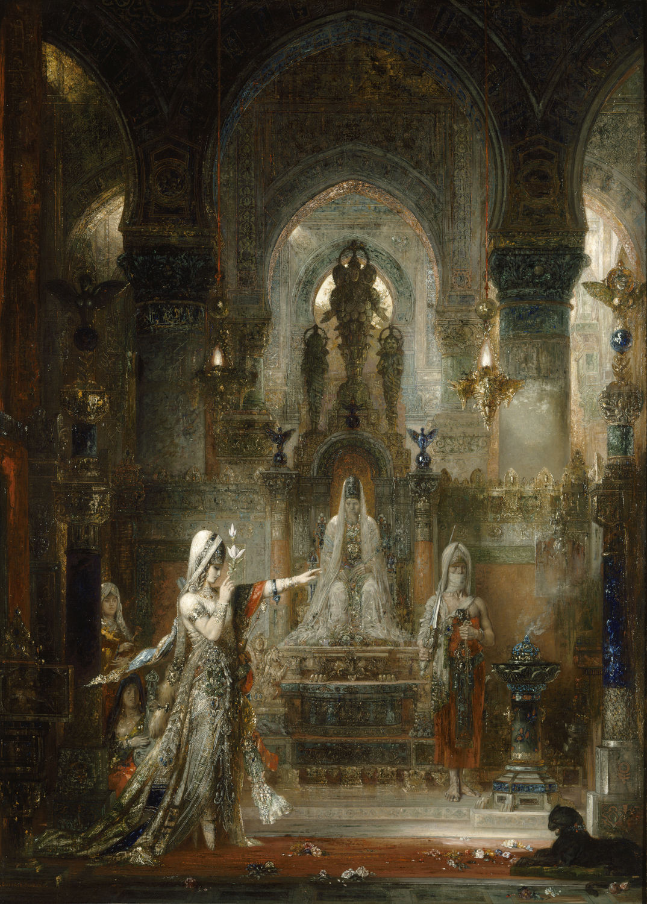
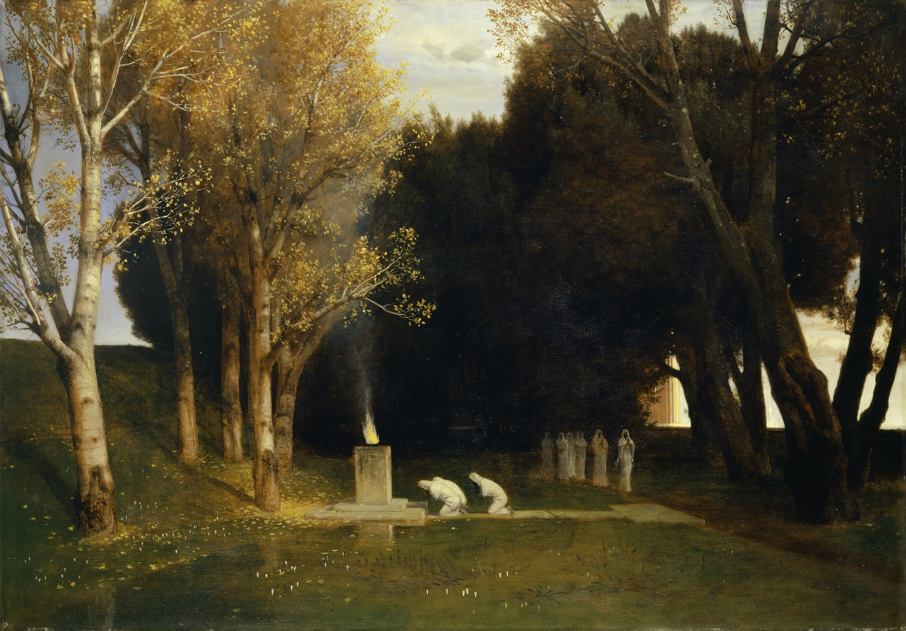

好きな絵画
画像サイズを合わせて表示しているためそれぞれの絵画全体は写っていない。 ぜひ画像保存するか検索して絵画の全体まで見てほしい。
John Atkinson Grimshow
John Atkinson Grimshowは1800年代イギリスの画家。 彼の絵画は夜空––時に眩しいほどの月明かり、緑や銀色の鮮やかで、くぐもった空気––が印象的。 モチーフは街や住宅街、港が多い。写真を使っていたようで、同じ風景の違う色彩の絵画も多い。 John Atkinson Grimshowだけをまとめたサイト や Art UK、高解像度画像が多い に彼の絵画が多く掲載されている。 ちなみに彼の子供も絵を描いたので彼を呼ぶには名前を全部唱えなくてはならない。

Baiting the Lines, Whitby

Boar Lane, Leeds

Lights in the Harbour, Scarborough

Princes Dock, Hull

the Lighthouse at Scarborough

Silver Moonlight

In the Golden Mists of Autumn
Gustave Moreau
Gustave Moreauは象徴主義を代表する1800年代フランスの画家。 晩年より彼は住んでいた家を改修し、彼自身の作品を展示する Gustave Moreauの美術館 を創設した。

Salomé dansant devant Hérode (Salome Dancing before Herod)

Tattooed Salome (uncompleted)

La Parque et l'Ange de la mort (The Parca and the Angel of Death)
Caspar David Friedrich
1800年代に活動したスウェーデン領ドイツ出身の画家。彼の 生誕250周年サイト に作品が集められている。

Tetschen Altar (The Cross in the Mountains)

Monk by the Sea

Abbey in the Oakwood

Greifswald by Moonlight

Two Men Contemplating the Moon
その他

Der heilige Hain (The Sacred Grove)

Interior. The Tall Windows